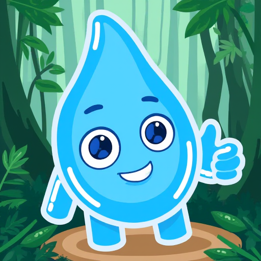
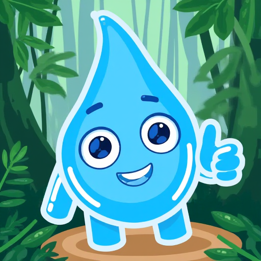
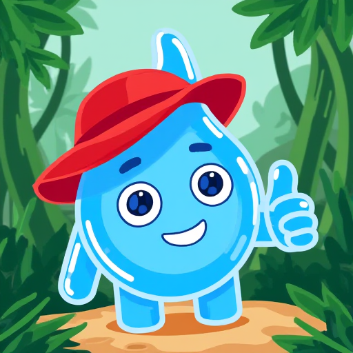
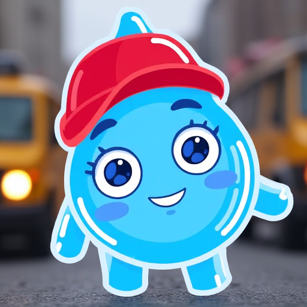

Train LoRA
Task: train LoRA model to paint cartoon character from Telegram messenger.
Stage 1. Collected animated images from Telegram in .tgs and converted it into png.
Stage 2. Chosen 160 images and changed transparent background to red, white, blue, green.
Generated descriptions to each item and created a dataset.
Trained LoRA to make images like that.




Dataset on Hugging Face: talikbayev/apusher_colour_652

--------------------- *** ---------------------